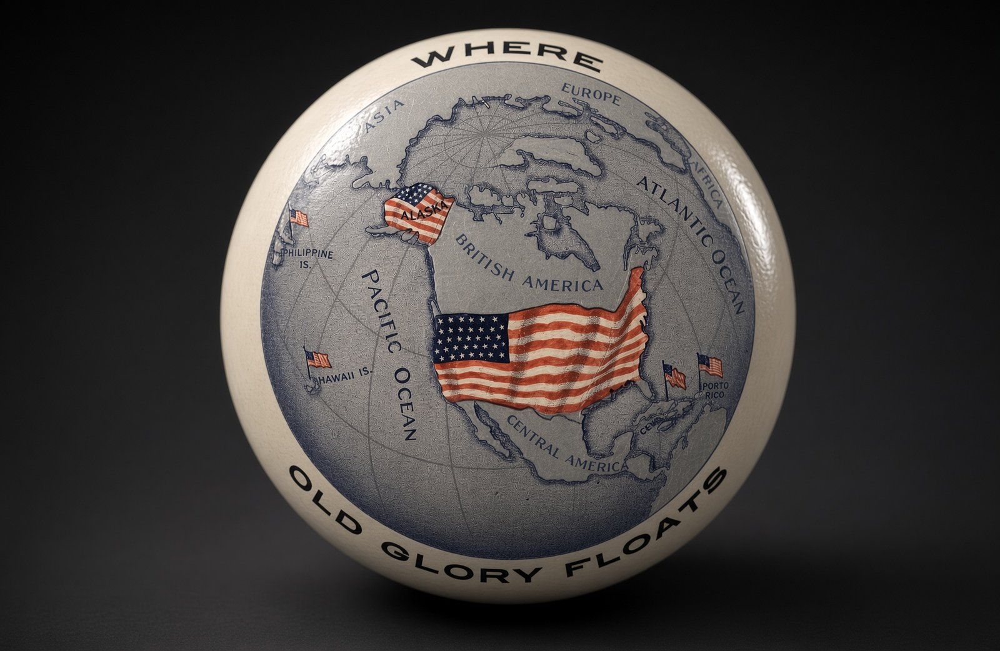

Artículo 5 · Anexión

La anexión es el acto por el cual un Estado incorpora a su territorio, de forma permanente, una tierra que antes no era suya. No es un tratado de amistad ni una alianza. El lugar anexado deja de ser independiente, o deja de pertenecer a otro soberano, y pasa a formar parte del país que lo anexa: mismas leyes de fondo y mismo gobierno final.
En Estados Unidos ese final no es siempre el mismo. Un territorio anexado puede entrar como estado o quedar como territorio del Congreso. La historia ya anexada lo muestra mejor que la definición.
Texas, 1845: de república a estado
Texas era un país: la República de Texas. En 1845 su congreso aceptó la unión y el Congreso de Estados Unidos la admitió como estado. La anexión y la igualdad política llegaron juntas. No hubo una etapa larga de territorio. Es el caso más cercano a lo que suele imaginarse cuando se dice “entrar en la Unión”.
Hawái, 1898: de reino a territorio, y en 1959 a estado
Hawái era un reino. En 1893 un grupo local derrocó a la reina Liliʻuokalani, con apoyo del enviado de Estados Unidos. En 1898 el Congreso se anexó las islas. No se convirtieron en estado ese año. Fueron territorio hasta 1959, cuando Hawái pasó a ser el estado 50. La anexión y la estadidad fueron dos actos, separados por sesenta y un años.
Puerto Rico, 1898: anexado y todavía territorio
España cedió Puerto Rico a Estados Unidos en el Tratado de París del 10 de diciembre de 1898, al terminar la guerra. Desde entonces la soberanía es estadounidense. La Ley Jones de 1917 dio la ciudadanía. En 1952 se organizó el Estado Libre Asociado. Sigue sin ser estado: hay ciudadanía y leyes federales, y no hay senadores ni voto para presidente. Está anexado. No está integrado en igualdad con Texas o Florida.
Guam, 1898
Guam también pasó de España a Estados Unidos en el Tratado de París de 1898. Es un territorio no incorporado. Sus habitantes son ciudadanos estadounidenses. Tienen gobierno local y un delegado en el Congreso sin voto pleno. La anexión no lo convirtió en estado.
Samoa Americana, 1900
En 1900 los jefes de Tutuila cedieron la isla a Estados Unidos. Más tarde se añadió Manuʻa. Samoa Americana es el único territorio habitado cuyos nacionales no reciben la ciudadanía automática al nacer: son nacionales de Estados Unidos, no ciudadanos, salvo que la pidan. También está bajo soberanía estadounidense, con un estatuto distinto al de Puerto Rico.
Islas Vírgenes de Estados Unidos, 1917
Dinamarca se las vendió a Estados Unidos en 1917. Antes eran las Indias Occidentales Danesas. La compra fue la anexión. Hoy son territorio. La ciudadanía llegó en 1927. Tampoco son un estado.
Islas Marianas del Norte, 1976
Después de la Segunda Guerra Mundial quedaron bajo administración de Estados Unidos como parte del fideicomiso del Pacífico. En 1976 entró en vigor el convenio que las hizo commonwealth en unión política con Estados Unidos. No son un país independiente ni un estado. Son el caso más reciente de incorporación permanente.
Lo que la lista demuestra
Anexar es pasar la soberanía. No es, por sí solo, volverse estado. Texas lo fue al entrar. Hawái lo fue sesenta y un años después. Puerto Rico, Guam, Samoa Americana, las Islas Vírgenes y las Marianas del Norte están anexados y siguen siendo territorios. Filipinas también fue cedida en 1898 y luego, en 1946, recuperó la independencia: la anexión no tiene por qué ser eterna si una ley posterior la revierte.
Por eso, en el debate sobre Cuba, la palabra anexión solo dice que la isla pasaría a soberanía de Estados Unidos. No dice si sería el camino de Texas, el de Hawái o el de Puerto Rico. Esa diferencia es el centro de la discusión.